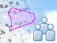

VORPHASE Plangebiet definieren

Online-Digitalisierung
abschliessen...
|  | Das
Projekt ist in der
Derzeitige Aktion: VORPHASE Plangebiet definieren |
| Das Plangebiet kann auf zwei Arten definiert werden: | |
| Import einer entsprechenden Shape oder GML-Datei Online-Digitalisierung abschliessen...
|